v3.DenoiseNet(fch=2.0) 架构逐位等价
（参数量同为 5,910，前向输出最大差 0.000e+00）；且协议完全相同、只换训练管线时
结果差 ≤0.04 dB。分解结果：训练协议（损失 + 模型选择 + 归一化）合计约
-0.78 dB，架构（时域多尺度残差 + 脉冲感知注入）约 +3.07 dB
（干扰帧；干扰帧最差 +0.48 / +3.10）。
此前"PAM-Net 优于阶段0"的结论成立，但现在协议成分被单独量化出来了。详见第六节。| 导师文档 | 本实现 | 具体形式 | 参数量 |
|---|---|---|---|
| 轻量化特征提取层 一维卷积 + 归一化 + 激活 |
FeatureExtractor | 深度可分离 Conv1d(1→24, k=7) + Norm + ReLU | 104 |
| 短时尺度分支 识别尖峰、脉冲和突发边缘 |
ShortBranch | 小核 k=3 两层，实测感受野 13 点 | 2,808 |
| 长时尺度分支 提取波形连续性和时序结构 |
LongBranch | k=7 + 膨胀率 1/4/16，实测感受野 135 点（≈22 ms） | 3,936 |
| 门控融合 g=σ(Wg[Fs;Fl]) |
GatedFusion | Conv1d(48→24, k=1) + Sigmoid，逐点加权 | 1,176 |
| 脉冲感知分支 pn=σ(fimp(F)n) |
PulseBranch | 深度可分离 Conv1d + Conv1d(·→1) + Sigmoid | 433 |
| 残差重建 ŝ=y−r̂ |
ResidualHead | 深度可分离 Conv1d + Conv1d(·→1) | 449 |
| 合计 | — | — | 8,906 |
单元测试 8 项全过：参数量、前向形状、梯度流（无死分支）、Huber 两段数值与梯度有界性、
L_imp/L_spec 手算一致、频域精修分支与 v3 FrequencyBranch 逐位一致（最大差 0）、
感受野实测、长度保持性（k=3…9, d=1…16）。
p_n=σ(f_imp(F)_n)，
未给融合公式。本实现把 pn 作为附加通道拼接送入下游：
纯时域版 r̂=f_θ([F_fuse;p_n])；频域版把 p 按 hop 做 max-pool 对齐到
STFT 帧率、沿频率轴广播后作为掩码网络的第 2 个输入通道。F_fuse⊙(1+p_n)，实测失败：
p 的分离度持续变好，验证 SNR 却从 +0.30 一路降到 −2.68 dB —— L_imp 的梯度经乘性门
直接灌进共享主干，"为了拟合掩码而破坏重建"。按导师文档：L = L_Huber + λ₁·L_imp + λ₂·L_spec，λ 由验证集确定。
文档没给具体数值，而直接沿用既有代码的 λ₂=0.5 会出问题，因此先做量级校准。
| 估计质量 | L1(时域) | Huber(δ=0.2) | L1(幅度谱) | 谱/时域 比值 |
|---|---|---|---|---|
| 不处理（= 网络初始化输出） | 1.0801 | 0.2007 | 27.68 | 25.6× |
| 0.5×（频域模型初始化近似） | 0.6725 | 0.1194 | 14.22 | 21.1× |
| clean + 0.30·noise | 0.3240 | 0.0516 | 8.22 | 25.4× |
| clean + 0.15·noise | 0.1620 | 0.0216 | 4.08 | 25.2× |
torch.stft 未归一化的幅度尺度是时域残差的 20~25 倍。若取 λ₂=0.5，
谱项占总损失 90%+，Huber 的"抗脉冲"作用被淹没。校准后取 λ₂=0.05，
并额外跑 λ₂=0.5 作敏感性对照（见消融表 pamnet_l2big）。
训练日志显示验证指标大幅振荡。对全部 run 统计（analyze_stability.py）：
逐轮 val 帧增益的标准差中位 2.01 dB、最大 3.15 dB；最佳轮次散布在 4~14 轮；
「最佳轮 − 末5轮均值」中位 2.51 dB。也就是说 best-checkpoint 选择在挑"运气轮次"，
而它带来的乐观偏差与要论证的效应量同量级。
输入是重尾的（α 稳定背景 + 20×rms 脉冲），逐 batch 的统计量差异极大。 BN 的 running statistics 因此被脉冲污染，eval 模式（用 running stats）与 train 模式 （用 batch stats）行为不一致。实测同一 checkpoint：
| 配置 | 帧增益中位 (dB) |
|---|---|
| 原 running stats（eval 模式） | 11.46 |
| 重校准到训练集统计 | 6.14 |
| batch stats（train 模式） | 7.46 |
归一化统计量能把指标推动 5.3 dB —— 足以解释逐轮 2~3 dB 的振荡。
给全部卷积层加可切换的归一化（--norm bn|gn|in）。GN/IN 不依赖 batch 统计，
train 与 eval 输出逐位一致（实测最大差 0.000；BN 为 0.84）。同配置、同数据、
同超参、只换归一化的对照：
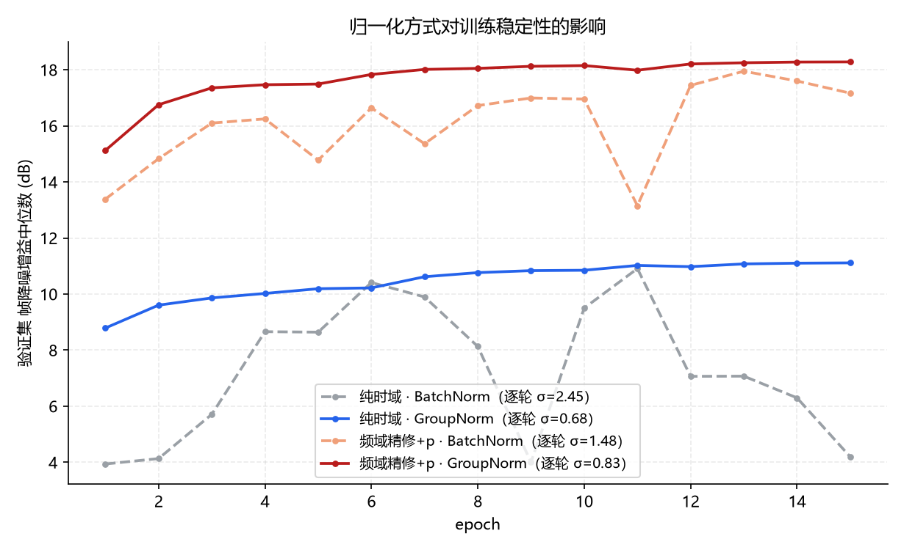
| 配置 | 归一化 | 逐轮标准差 (dB) | 最佳轮次 | 最佳−末5轮 (dB) |
|---|---|---|---|---|
| 纯时域 PAM-Net | BatchNorm | 2.450 | 11 | 3.80 |
| 纯时域 PAM-Net | GroupNorm | 0.677 | 15（末轮） | 0.05 |
| 频域精修 + p 注入 | BatchNorm | 1.483 | 13 | 1.29 |
| 频域精修 + p 注入 | GroupNorm | 0.831 | 15（末轮） | 0.08 |
振荡降到约 1/3.6，且最佳轮次移到末轮（单调收敛），选择偏差从数 dB 降到 ~0.05 dB。 GN 不但没让性能变差，在纯时域上反而更好（干扰帧 +2.8 dB）。因此最终结果改用 GN 协议。
导师文档把创新性落在"是否针对脉冲干扰与有效水声波形之间的差异形成判别能力"。 最直接的证据是 pn 与真实干扰掩码 mn 的对应关系。 下图为推荐模型（GN，频域精修 + p 注入）在 testA 上的统计。
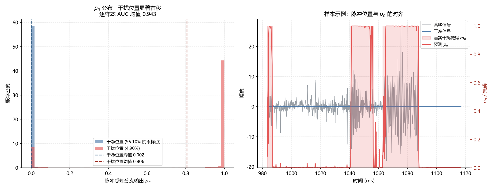
| 统计量 | 数值 |
|---|---|
| 干扰位置平均置信度 pn（中位） | 0.8284（0.9997） |
| 干净位置平均置信度 pn（中位） | 0.0027（0.0004） |
| 两者倍数 | 303× |
| 逐样本 AUC 均值（中位） | 0.953（0.976） |
| AUC > 0.8 的样本比例 | 96.7% |
结论：该分支确实学到了"哪里是脉冲"，不是输出常数。这是导师方案创新点成立的 关键证据 —— 但"能识别"不等于"能提升性能"，见下一节。
| 模型 | 参数 | 干净帧增益 (dB) | 干扰帧增益 (dB) | 干扰帧最差 (dB) | 输出 SNR (dB) |
|---|---|---|---|---|---|
| 纯时域 + 脉冲感知分支 | 8,906 | 10.85 ± 0.49 | 17.29 ± 0.69 | 9.80 ± 0.39 | 9.25 ± 0.44 |
| 纯时域 − 脉冲感知分支 | 8,457 | 10.84 ± 1.04 | 17.19 ± 0.84 | 9.81 ± 0.52 | 9.19 ± 0.65 |
| 频域精修 + p 注入频域（推荐） | 14,858 | 18.27 ± 0.29 | 27.38 ± 0.16 | 17.12 ± 0.19 | 17.70 ± 0.22 |
| 频域精修 − 脉冲感知分支 | 14,367 | 18.14 ± 0.22 | 26.59 ± 0.26 | 17.10 ± 0.23 | 17.44 ± 0.21 |
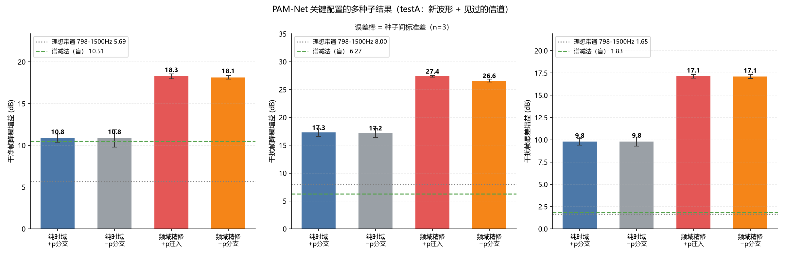
信号是窄带 chirp（798~1500 Hz），而 α 稳定背景与突发脉冲都是宽带的， 所以一个固定带通就能滤掉大量噪声。把 PAM-Net 放进这个参照系才能判断增益来自哪里。
| 方法 | 输出全局 SNR (dB) | 干净帧增益 (dB) | 干扰帧增益 (dB) | 干扰帧最差 (dB) |
|---|---|---|---|---|
| 含噪输入 | -8.22 | +0.00 | +0.00 | +0.00 |
| 理想带通 798-1500Hz | -2.09 | +5.69 | +8.00 | +1.65 |
| 谱减法（盲） | -0.25 | +10.51 | +6.27 | +1.83 |
| 维纳滤波（盲） | -3.64 | +5.47 | +2.21 | +0.39 |
| 中值滤波 k=5 | -3.26 | -1.50 | +4.58 | -2.48 |
| 对比（testA） | 指标 | 均值差 ± 标准误 (dB) | t | p | n（种子） |
|---|---|---|---|---|---|
| 纯时域：+脉冲分支 − (−脉冲分支) [GN] | 干净帧 | +0.003 ± 0.405 | 0.01 | 0.996 ns | 3 |
| 干扰帧 | +0.095 ± 0.338 | 0.28 | 0.805 ns | 3 | |
| 干扰最差 | -0.009 ± 0.127 | -0.07 | 0.948 ns | 3 | |
| 输出SNR | +0.056 ± 0.270 | 0.21 | 0.855 ns | 3 | |
| 频域精修：+p注入 − (−脉冲分支) [GN] | 干净帧 | +0.127 ± 0.082 | 1.54 | 0.198 ns | 5 |
| 干扰帧 | +0.790 ± 0.143 | 5.52 | 0.005 ** | 5 | |
| 干扰最差 | +0.025 ± 0.141 | 0.17 | 0.870 ns | 5 | |
| 输出SNR | +0.259 ± 0.120 | 2.15 | 0.098 ns | 5 | |
| 阶梯①损失+选择准则（BN 固定） | 干净帧 | -0.145 | — | — | 1 |
| 干扰帧 | -0.249 | — | — | 1 | |
| 干扰最差 | -0.017 | — | — | 1 | |
| 输出SNR | -0.036 | — | — | 1 | |
| 阶梯②归一化（损失固定） | 干净帧 | +1.225 ± 0.127 | 9.68 | 0.011 * | 3 |
| 干扰帧 | -0.155 ± 0.161 | -0.96 | 0.437 ns | 3 | |
| 干扰最差 | +0.810 ± 0.101 | 7.99 | 0.015 * | 3 | |
| 输出SNR | +1.069 ± 0.128 | 8.38 | 0.014 * | 3 | |
| 阶梯③加时域残差通路 | 干净帧 | +3.175 ± 0.063 | 50.72 | 0.000 *** | 5 |
| 干扰帧 | +2.278 ± 0.179 | 12.70 | 0.000 *** | 5 | |
| 干扰最差 | +3.080 ± 0.121 | 25.45 | 0.000 *** | 5 | |
| 输出SNR | +4.258 ± 0.065 | 65.73 | 0.000 *** | 5 | |
| 阶梯④加脉冲感知分支 | 干净帧 | +0.127 ± 0.082 | 1.54 | 0.198 ns | 5 |
| 干扰帧 | +0.790 ± 0.143 | 5.52 | 0.005 ** | 5 | |
| 干扰最差 | +0.025 ± 0.141 | 0.17 | 0.870 ns | 5 | |
| 输出SNR | +0.259 ± 0.120 | 2.15 | 0.098 ns | 5 |
| 对比 | 指标 | 均值差 (dB) | 种子数 |
|---|---|---|---|
| 纯时域：+ − − | 干净帧 | -0.381 | 1 |
| 干扰帧 | +0.287 | 1 | |
| 干扰最差 | +0.208 | 1 | |
| 输出SNR | +0.174 | 1 | |
| 频域：+ − − | 干净帧 | +1.993 | 1 |
| 干扰帧 | +1.265 | 1 | |
| 干扰最差 | +0.962 | 1 | |
| 输出SNR | +2.050 | 1 |
两个变体在同一批测试样本上评估，因此可对逐样本指标差做配对检验。 它消除的是"样本抽样"不确定性，不消除训练随机性。
| 对比（testA） | 指标 | 均值差 (dB) | t | p | Cohen's dz |
|---|---|---|---|---|---|
| 纯时域：+脉冲分支 vs −脉冲分支 | 干净帧 | -0.381 | -29.31 | 2.3e-139 *** | -0.892 |
| 干扰帧 | +0.287 | 8.56 | 3.9e-17 *** | +0.262 | |
| 干扰最差 | +0.208 | 5.00 | 6.6e-07 *** | +0.153 | |
| 后置频域精修：+脉冲分支 vs −脉冲分支 | 干净帧 | -0.113 | -3.72 | 2.1e-04 *** | -0.113 |
| 干扰帧 | +0.178 | 2.77 | 5.7e-03 ** | +0.085 | |
| 干扰最差 | -0.214 | -3.03 | 2.5e-03 ** | -0.093 | |
| p注入频域：+脉冲分支 vs −脉冲分支 | 干净帧 | +1.993 | 38.20 | 1.2e-202 *** | +1.162 |
| 干扰帧 | +1.265 | 17.58 | 6.0e-61 *** | +0.539 | |
| 干扰最差 | +0.962 | 12.25 | 2.4e-32 *** | +0.375 | |
| p注入频域 vs 后置频域精修（均含脉冲分支） | 干净帧 | +2.106 | 35.91 | 1.9e-186 *** | +1.093 |
| 干扰帧 | +1.087 | 16.51 | 1.1e-54 *** | +0.506 | |
| 干扰最差 | +1.176 | 14.04 | 3.3e-41 *** | +0.430 | |
| 加频域精修 vs 不加（均含脉冲分支） | 干净帧 | +5.480 | 53.20 | 7.3e-304 *** | +1.619 |
| 干扰帧 | +11.692 | 60.09 | 0.0e+00 *** | +1.842 | |
| 干扰最差 | +6.163 | 33.73 | 3.6e-170 *** | +1.034 | |
| PAM-Net 纯时域 vs 阶段0 纯频域 | 干净帧 | -3.233 | -42.10 | 6.2e-230 *** | -1.281 |
| 干扰帧 | -10.082 | -45.63 | 1.3e-252 *** | -1.399 | |
| 干扰最差 | -3.949 | -20.36 | 4.5e-78 *** | -0.624 | |
| p注入频域 vs 阶段0 纯频域 | 干净帧 | +4.353 | 82.85 | 0.0e+00 *** | +2.521 |
| 干扰帧 | +2.697 | 25.30 | 6.1e-111 *** | +0.776 | |
| 干扰最差 | +3.390 | 29.75 | 5.6e-142 *** | +0.912 | |
| p注入频域 vs PAM-Net 纯时域 | 干净帧 | +7.586 | 122.29 | 0.0e+00 *** | +3.721 |
| 干扰帧 | +12.779 | 66.09 | 0.0e+00 *** | +2.026 | |
| 干扰最差 | +7.340 | 41.57 | 4.5e-225 *** | +1.274 | |
| 损失换 L1 vs Huber（纯时域） | 干净帧 | +0.438 | 29.96 | 5.3e-144 *** | +0.912 |
| 干扰帧 | +0.793 | 24.08 | 1.3e-102 *** | +0.738 | |
| 干扰最差 | +0.305 | 7.49 | 1.5e-13 *** | +0.230 | |
| λ2=0.5 vs λ2=0.05（纯时域） | 干净帧 | -0.977 | -41.97 | 5.0e-229 *** | -1.277 |
| 干扰帧 | -1.073 | -43.97 | 1.9e-241 *** | -1.348 | |
| 干扰最差 | -0.954 | -20.13 | 1.2e-76 *** | -0.617 |
此前报告把 PAM-Net（18.27 / 27.38 / 17.12）与阶段0 纯频域模型（14.13 / 25.09 / 13.54） 直接对比，并把这约 4 dB 归因于架构。但这个对比是混杂的：两者在 归一化方式、损失函数、模型选择准则、训练脚本上全都不同，无法单独归因。
本节用一条每步只改一个因素的阶梯把它拆开。前置条件是先证明
「纯频域模式的 PAM-Net」与「阶段0 的 v3.DenoiseNet(fch=2.0)」
架构逐位等价：参数量同为 5,910，权重复制后前向输出最大绝对差
0.000e+00（test_pamnet_freqonly.py，8 项检查全过，
且 5 个既有 checkpoint 仍能严格加载 —— 说明重构没有副作用）。
| 档 | 配置 | 参数 | 种子 | 干净帧增益 | 干扰帧增益 | 干扰帧最差 |
|---|---|---|---|---|---|---|
| R0 阶段0 纯频域 BN + L1+0.5谱 按 val_loss 选 | 5910 | n=1 | 14.13 | 25.09 | 13.54 | |
| R1 纯频域 同协议走 PAM 管线 | 5910 | n=1 | 14.13 | 25.05 | 13.54 | |
| R2 + 新损失/选择准则 | 5910 | n=3 | 13.79±0.18 | 24.68±0.22 | 13.32±0.18 | |
| R3 + 归一化 GN | 5910 | n=5 | 14.96±0.10 | 24.31±0.33 | 14.02±0.21 | |
| R4 + 时域残差通路 | 14367 | n=5 | 18.14±0.22 | 26.59±0.26 | 17.10±0.23 | |
| R5 + 脉冲感知分支 | 14858 | n=5 | 18.27±0.29 | 27.38±0.16 | 17.12±0.19 |
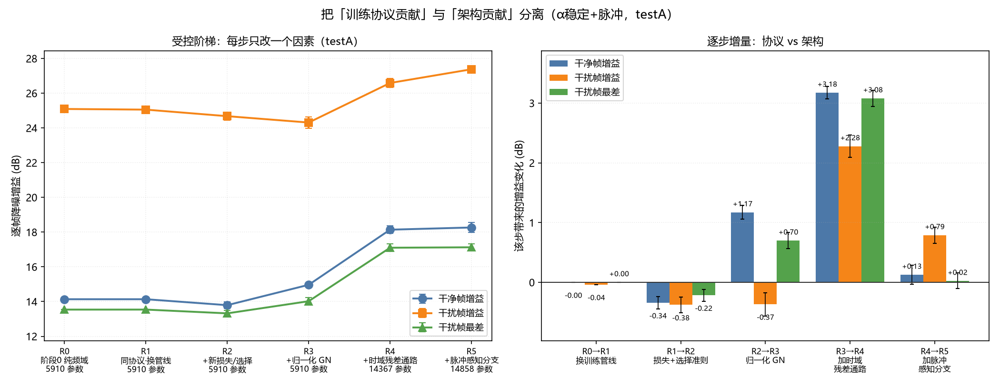
| 改动 | Δ干净帧 (dB) | Δ干扰帧 (dB) | Δ干扰最差 (dB) |
|---|---|---|---|
| R0→R1 纯频域 同协议走 PAM 管线 | -0.00 ± 0.00 | -0.04 ± 0.00 | +0.00 ± 0.00 |
| R1→R2 + 新损失/选择准则 | -0.34 ± 0.10 | -0.38 ± 0.13 | -0.22 ± 0.10 |
| R2→R3 + 归一化 GN | +1.17 ± 0.11 | -0.37 ± 0.20 | +0.70 ± 0.14 |
| R3→R4 + 时域残差通路 | +3.18 ± 0.11 | +2.28 ± 0.19 | +3.08 ± 0.14 |
| R4→R5 + 脉冲感知分支 | +0.13 ± 0.16 | +0.79 ± 0.14 | +0.02 ± 0.13 |
train_pam.py vs train_pamnet.py），结果差
≤0.04 dB（14.13/25.05/13.54 vs 14.1344/25.0532/13.5379）。
两条独立实现的管线给出同一个数，说明阶梯的每一档都是可比的。起因是一个看起来矛盾的观测：脉冲感知分支的效应在 testA 上是 +0.79 dB（干扰帧）、 在 testC 上只有 +0.33 dB，而两个测试集用的是同一批波形（chirp 18–20）。 逐样本诊断给出了答案 —— 效应是强 SNR 依赖的：
| SNR 档 | testA 干净帧 | testA 干扰帧 | testC 干净帧 | testC 干扰帧 |
|---|---|---|---|---|
| −10 dB | +0.011 | +1.092 | +0.122 | +0.555 |
| −5 dB | −0.021 | +0.903 | +0.029 | +0.434 |
| 0 dB | −0.078 | +0.531 | +0.142 | +0.152 |
| +5 dB | +0.255 | +0.757 | +0.383 | +0.124 |
| +10 dB | +0.467 | +0.666 | +0.622 | +0.356 |
低 SNR 时收益全在干扰帧，高 SNR 时收益转到干净帧 —— 两个测试集是同一趋势， 只是幅度不同。所以"testA/testC 不一致"的表述是错的，真正的是"效应随 SNR 改变落点"。
为了判断逐 chirp 的差异到底是不是波形造成的，生成了一个 chirp 1–20 × 信道 1–8 × 5 SNR × 2 噪声实现 = 1,600 样本的扫描集， 用已训练的 pf / nopulse 各 5 个种子推理（种子间平均），然后做方差分解：
| 指标 | 逐样本 SD （干扰实现波动） | 逐 chirp 均值 SD （实测） |
纯实现波动下的期望 | 分解出的波形成分 | F(19,1564) |
|---|---|---|---|---|---|
| 干净帧 | 0.471 | 0.095 | 0.053 | 0.079 | 3.24 |
| 干扰帧 | 1.728 | 0.398 | 0.194 | 0.344 | 4.13 |
| 干扰最差 | 1.682 | 0.220 | 0.189 | 0.111 | 1.34 |
最初假设"带宽越宽 → 与宽带干扰重叠越多 → 分支越有价值"。但原始扫描集有一个
混杂：干扰的随机种子是 seed + 样本序号，而 chirp 是最外层循环，
所以每个 chirp 独占一段连续种子区间 —— 干扰实现与 chirp 序号完全混杂。
因此给数据生成器加了 seed_mode='paired'：种子只由 (信道, SNR, 重复) 决定，
并且把干扰/噪声生成在固定长度上再截取（因为 gen_burst 的突发数量与到达
时刻都依赖信号长度，只有固定长度才能让不同时长的 chirp 看到逐位相同的干扰）。
实测配对性：干扰与噪声最大差 1.07e−14（机器精度）、掩码逐位相同、干净信号差 5.59。
| 自变量 | r（原始设计，干扰混杂） | r（配对设计，干扰固定） |
|---|---|---|
| 带宽 BW (Hz) | +0.168 | +0.224 |
| 下截止频率 | +0.017 | -0.151 |
| 上截止频率 | +0.329 | +0.228 |
| 时长 T (s) | -0.116 | +0.150 |
| 幅度 A | +0.205 | +0.148 |
| 干扰落在信号带内的能量占比 | +0.201 | +0.094 |
| 干扰与信号的时频重叠率 | -0.304 | -0.696 |
| 带内干扰/信号能量比 | +0.082 | +0.349 |
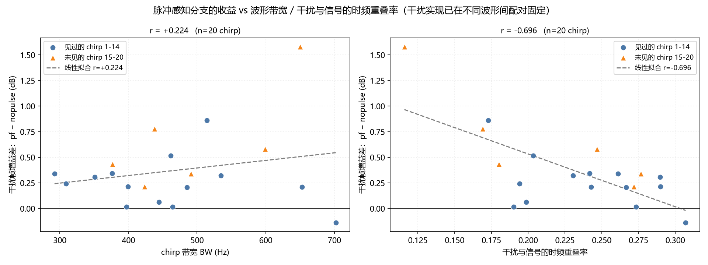
注意：以上是"效应大小的调制因素"，不是"效应存在与否"。平均效应仍然很小 （干扰帧 +0.37 dB），且高度依赖具体样本。
上一小节的「时频可分性」是观察性证据 —— 我们只改变了波形，重叠率随之变化， 但重叠率高的波形可能同时还有其他不同。要确立因果，必须直接操纵重叠率。 为此做了两个独立干预，都用真实的信号与真实的背景噪声，只替换突发干扰。
gen_burst.m 一致），
只把载频从 300 Hz 扫到 1500 Hz。300 个样本 × 5 个种子 × 7 个档位。
结果：带内能量占比从 0.017 变到 0.952，分支收益没有任何单调趋势
（档位级 r = +0.40，p = 0.33，方向还与机制预测相反）。| 载频 (Hz) | 带内能量占比 | TF 支撑重叠率 | Δ 干扰帧 (dB) |
|---|---|---|---|
| 300 | 0.017 | 0.000 | +0.426 ± 0.208 |
| 500 | 0.026 | 0.000 | +0.093 ± 0.398 |
| 700 | 0.103 | 0.002 | +0.214 ± 0.340 |
| 900 | 0.893 | 0.041 | +0.812 ± 0.428 |
| 1100 | 0.952 | 0.073 | +0.032 ± 0.772 |
| 1300 | 0.929 | 0.066 | +0.559 ± 0.425 |
| 1500 | 0.678 | 0.023 | +0.693 ± 0.475 |
| Δ = R5 − R4；± 为种子间标准差。带内占比低 = 突发落在信号频带外 | |||
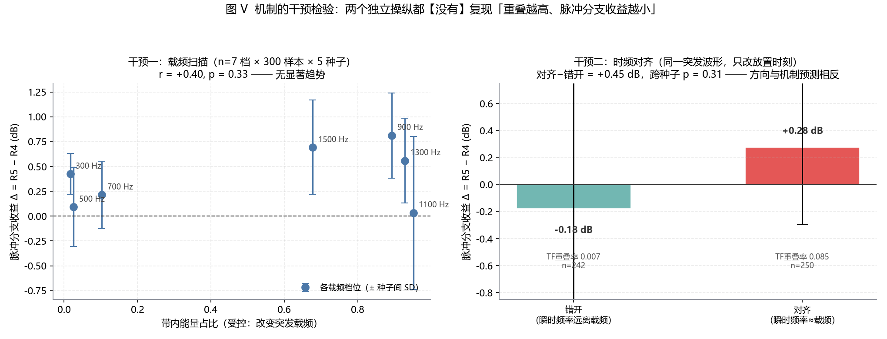
诚实标注：本节的结论是「未能证实」，不是「证伪」。 两个干预都没有足够功效排除小于约 0.5 dB 的效应（种子间 SD 在 0.57~1.07 dB）。 若要在 0.2 dB 的量级上定论，需要把每组样本量再扩大约一个数量级。
前面所有结论都建立在一个工作点上：α = 1.5、突发到达率 5 次/秒。本节用 单因素轮换（OFAT）设计，围绕该工作点各变一个方向，回答"结论能推到多远"。 同时这一步也把上一节留下的问题（脉冲感知分支在什么条件下才真正有价值） 放到一个可检验的框架里。
| 条件代号 | α | 突发到达率 | 改动的唯一因素 | 样本数（testA/testC） |
|---|---|---|---|---|
| a12_r5 | 1.2 | 5 /s | 背景噪声尾部更重 | 1,080 / 240 |
| a18_r5 | 1.8 | 5 /s | 背景噪声更接近高斯 | 1,080 / 240 |
| a20_r5 | 2.0 | 5 /s | 背景退化为高斯（内部一致性校验） | 1,080 / 240 |
| base | 1.5 | 5 /s | 训练条件（基线） | 1,080 / 240 |
| a15_r25 | 1.5 | 2.5 /s | 突发干扰更稀疏 | 1,080 / 240 |
| a15_r10 | 1.5 | 10 /s | 突发干扰更密集（2×） | 1,080 / 240 |
| gauss | — | 5 /s | 独立生成的高斯对照数据集 | 1,080 / 240 |
seed + 样本序号 作种子，且各条件的循环顺序完全一致，
因此样本序号 i 在所有条件下对应同一 (chirp, 信道, SNR, 重复)。并且
α 轮换时突发干扰逐位相同、rate 轮换时背景噪声逐位相同。
于是条件之间的比较可以做逐样本配对，统计功效远高于独立样本。本项目的 SNR 定义是75% 分位数匹配（α < 2 时方差无穷，无法用功率定义）。 这个定义固定了噪声的"核心宽度"，但没有固定它的二阶矩。实测下来， α 每降一档，背景噪声的有效功率信噪比就掉一大截：
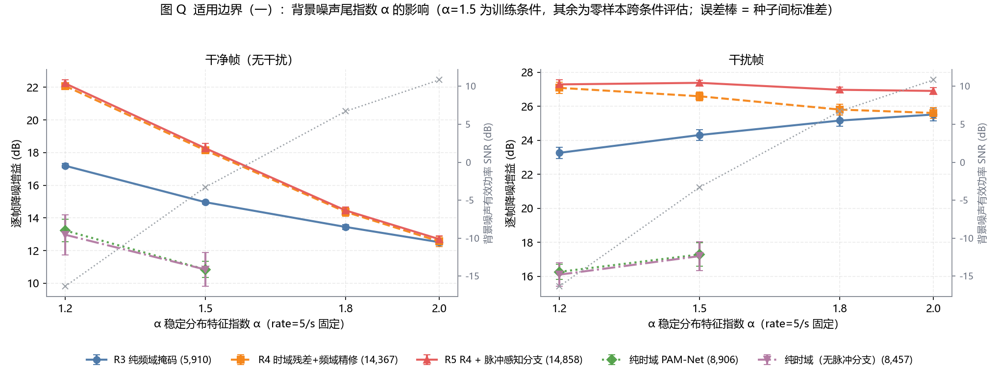
| 条件 | 干扰帧占比 | 有效功率 SNR（总） | 背景噪声有效 SNR | 干扰有效 SNR | 背景峰/rms | 背景 p99.9/rms |
|---|---|---|---|---|---|---|
| α=1.2 / rate=5 | 0.044 | -16.64 | -16.36 | -3.57 | 350.5 | 59.98 |
| α=1.5 / rate=5 训练条件 | 0.044 | -7.78 | -3.29 | -3.57 | 61.5 | 13.18 |
| α=1.8 / rate=5 | 0.044 | -4.82 | +6.71 | -3.57 | 15.1 | 3.80 |
| α=2.0 / rate=5 | 0.044 | -3.99 | +10.84 | -3.57 | 1.3 | 1.05 |
| α=1.5 / rate=2.5 | 0.022 | -6.27 | -3.29 | +0.88 | 61.5 | 13.18 |
| α=1.5 / rate=10 | 0.086 | -9.87 | -3.29 | -7.37 | 61.5 | 13.18 |
| 独立高斯数据 / rate=5 | 0.044 | -4.82 | +6.20 | -3.57 | 2.2 | 1.80 |
有效 SNR = 10·log₁₀(P信号/P噪声分量)，在降采样 + 定长后的信号上按样本计算再取中位数；
背景分量由 v = noisy − clean − imp 精确还原 | ||||||
8.1 节只做到了"发现混杂"。真正要回答的是：未匹配时看到的 "α 越小脉冲分支收益越小"，是尾形本身造成的，还是噪声功率造成的？ 做法是把名义 SNR 平移对应量，使有效功率 SNR 与 base 一一对应， 从而把 α 的效应单独隔离出来。平移量按 shift 的中位数确定 （比均值稳健 —— α 小时样本方差本身是重尾量）：
| 条件 | α | 名义 SNR 列表（dB） | 平移量 | 背景有效 SNR | 干扰有效 SNR | 背景峰/rms |
|---|---|---|---|---|---|---|
| base | 1.5 | −10 −5 0 +5 +10 | —（参照） | -3.29 | -3.57 | 61.5 |
| m_a12 | 1.2 | +3.07 +8.07 +13.07 +18.07 +23.07 | +13.07 | -3.29 | -3.57 | 77.8 |
| m_a18 | 1.8 | −20 −15 −10 −5 0 | −10.00 | -3.29 | -3.57 | 47.8 |
| a12_r5 | 1.2 | −10 −5 0 +5 +10 | 0（未匹配） | -16.36 | -3.57 | 350.5 |
| a18_r5 | 1.8 | −10 −5 0 +5 +10 | 0（未匹配） | 6.71 | -3.57 | 15.1 |
脉冲感知分支效应 Δ = R5 − R4（干扰帧，testA）：
| 条件 | 干净帧 Δ (dB) | 干扰帧 Δ (dB) |
|---|---|---|
| α=1.2 未匹配 | +0.157 ± 0.243 p=0.2212 | +0.202 ± 0.435 p=0.3566 留一 [+0.09, +0.35] |
| α=1.2 已匹配 | +0.475 ± 0.362 p=0.0427 | +0.410 ± 0.312 p=0.0424 留一 [+0.31, +0.49] |
| α=1.5 base | +0.127 ± 0.185 p=0.1988 | +0.790 ± 0.319 p=0.0052 留一 [+0.67, +0.87] |
| α=1.8 已匹配 | +0.267 ± 0.515 p=0.3106 | +1.766 ± 0.927 p=0.0130 留一 [+1.40, +1.93] |
| α=1.8 未匹配 | +0.087 ± 0.174 p=0.3240 | +1.163 ± 0.312 p=0.0011 留一 [+1.06, +1.26] |
架构优势 Δ = R5 − R3（testA）：
| 条件 | 干净帧 Δ (dB) | 干扰帧 Δ (dB) | 跨种子 p |
|---|---|---|---|
| α=1.2 未匹配 | +5.041 ± 0.249 | +4.026 ± 0.472 | 4.5e-05 |
| α=1.2 已匹配 | +4.377 ± 0.485 | +3.430 ± 0.210 | 3.4e-06 |
| α=1.5 base | +3.302 ± 0.207 | +3.068 ± 0.235 | 8.3e-06 |
| α=1.8 已匹配 | +0.555 ± 0.341 | +1.533 ± 0.616 | 5.1e-03 |
| α=1.8 未匹配 | +1.011 ± 0.150 | +1.809 ± 0.204 | 3.8e-05 |
testC（240 样本，功效更低）呈现同样的单调序：匹配功率下 α=1.2 的干扰帧效应 +0.164 dB < α=1.5 的 +0.325 dB < α=1.8 的 +1.310 dB；架构优势同样单调（+3.48 > +2.96 > +1.68）。方向一致，量级因样本量小而偏低。
把 5 个模型放到 7 个条件上评估（全部零样本，模型只在 base 上训练过）：
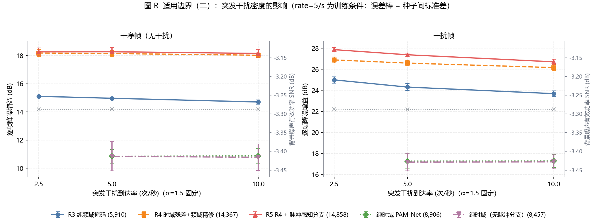
| 条件 | 模型 | 参数量 | 种子数 | 干净帧 | 干扰帧 | 干扰最差 |
|---|---|---|---|---|---|---|
| α=1.2 / rate=5 | R5 R4 + 脉冲感知分支 | 14,858 | 5 | 22.24 | 27.29 | 17.08 |
| R4 时域残差+频域精修 | 14,367 | 5 | 22.08 | 27.08 | 17.13 | |
| R3 纯频域掩码 | 5,910 | 5 | 17.20 | 23.26 | 13.02 | |
| 纯时域 PAM-Net | 8,906 | 3 | 13.24 | 16.26 | 10.12 | |
| 纯时域（无脉冲分支） | 8,457 | 3 | 12.97 | 16.10 | 10.03 | |
| α=1.5 / rate=5 训练条件 | R5 R4 + 脉冲感知分支 | 14,858 | 5 | 18.27 | 27.38 | 17.13 |
| R4 时域残差+频域精修 | 14,367 | 5 | 18.14 | 26.59 | 17.10 | |
| R3 纯频域掩码 | 5,910 | 5 | 14.96 | 24.31 | 14.02 | |
| 纯时域 PAM-Net | 8,906 | 3 | 10.85 | 17.29 | 9.80 | |
| 纯时域（无脉冲分支） | 8,457 | 3 | 10.84 | 17.19 | 9.81 | |
| α=1.8 / rate=5 | R5 R4 + 脉冲感知分支 | 14,858 | 5 | 14.46 | 26.97 | 16.02 |
| R4 时域残差+频域精修 | 14,367 | 5 | 14.37 | 25.81 | 16.00 | |
| R3 纯频域掩码 | 5,910 | 5 | 13.45 | 25.16 | 14.08 | |
| α=2.0 / rate=5 | R5 R4 + 脉冲感知分支 | 14,858 | 5 | 12.70 | 26.90 | 15.48 |
| R4 时域残差+频域精修 | 14,367 | 5 | 12.56 | 25.61 | 15.47 | |
| R3 纯频域掩码 | 5,910 | 5 | 12.52 | 25.51 | 13.90 | |
| α=1.5 / rate=2.5 | R5 R4 + 脉冲感知分支 | 14,858 | 5 | 18.26 | 27.86 | 20.61 |
| R4 时域残差+频域精修 | 14,367 | 5 | 18.18 | 26.89 | 20.22 | |
| R3 纯频域掩码 | 5,910 | 5 | 15.10 | 24.99 | 17.56 | |
| α=1.5 / rate=10 | R5 R4 + 脉冲感知分支 | 14,858 | 5 | 18.15 | 26.71 | 13.94 |
| R4 时域残差+频域精修 | 14,367 | 5 | 18.02 | 26.16 | 14.03 | |
| R3 纯频域掩码 | 5,910 | 5 | 14.70 | 23.69 | 10.88 | |
| 纯时域 PAM-Net | 8,906 | 3 | 10.87 | 17.29 | 7.35 | |
| 纯时域（无脉冲分支） | 8,457 | 3 | 10.77 | 17.21 | 7.37 | |
| 独立高斯数据 / rate=5 | R5 R4 + 脉冲感知分支 | 14,858 | 5 | 13.71 | 25.96 | 15.45 |
| R4 时域残差+频域精修 | 14,367 | 5 | 13.67 | 24.22 | 15.08 | |
| R3 纯频域掩码 | 5,910 | 5 | 14.21 | 24.89 | 14.30 |
第五节的头条结论「PAM-Net 远超全部经典方法」此前只在 base 条件上测过。 本节把同样的经典基线放到全部 9 个条件上。
sens_out/cache_*.npz
—— 与神经模型评估用的是完全相同的输入数组、相同的降采样/定长/掩码口径、
相同的指标代码（pam_metrics._stats_1d），两者严格配对。
已在 base 前 200 个样本上与存档 baseline_pam.json 对比校验，
四种方法的干扰帧增益差 0.0000 dB。干扰帧逐帧降噪增益（dB）：
| 条件 | 理想带通* | 谱减(盲) | 维纳(盲) | 中值(盲) | 最好盲方法 | R5 神经 | R5−最好盲 |
|---|---|---|---|---|---|---|---|
| α=1.5 / rate=5（base） | 8.69 | 6.69 | 2.25 | 5.18 | 6.69 | 27.38 | +20.69 |
| α=1.2 / rate=5 | 6.91 | 10.42 | 3.38 | 6.65 | 10.42 | 27.29 | +16.87 |
| α=1.8 / rate=5 | 9.64 | 5.23 | 1.66 | 4.57 | 5.23 | 26.97 | +21.73 |
| α=2.0 / rate=5 | 10.00 | 4.77 | 1.45 | 4.37 | 4.77 | 26.90 | +22.13 |
| α=1.5 / rate=2.5 | 9.09 | 7.61 | 2.61 | 5.18 | 7.61 | 27.86 | +20.25 |
| α=1.5 / rate=10 | 8.26 | 6.34 | 2.08 | 5.39 | 6.34 | 26.71 | +20.37 |
| 独立高斯 / rate=5 | 9.42 | 5.50 | 1.75 | 4.42 | 5.50 | 25.96 | +20.46 |
| α=1.2 已匹配功率 | 9.04 | 5.81 | 1.88 | 5.13 | 5.81 | 27.96 | +22.15 |
| α=1.8 已匹配功率 | 8.16 | 8.00 | 2.73 | 5.01 | 8.00 | 25.02 | +17.02 |
干净帧（无干扰）逐帧降噪增益（dB）—— 检验在低难度下经典方法是否追得上：
| 条件 | 理想带通* | 谱减(盲) | 维纳(盲) | 中值(盲) | R5 神经 | R5−带通 |
|---|---|---|---|---|---|---|
| α=1.5 / rate=5（base） | 5.67 | 11.77 | 5.56 | 0.70 | 18.27 | +12.59 |
| α=1.2 / rate=5 | 5.20 | 15.18 | 5.71 | 6.38 | 22.24 | +17.03 |
| α=1.8 / rate=5 | 5.61 | 10.30 | 5.41 | -3.89 | 14.46 | +8.85 |
| α=2.0 / rate=5 | 5.47 | 9.77 | 5.32 | -6.39 | 12.70 | +7.23 |
| α=1.5 / rate=2.5 | 5.83 | 12.09 | 5.58 | 0.69 | 18.26 | +12.44 |
| α=1.5 / rate=10 | 5.45 | 11.21 | 5.47 | 0.77 | 18.15 | +12.69 |
| 独立高斯 / rate=5 | 5.82 | 10.94 | 5.45 | -2.91 | 13.71 | +7.89 |
| α=1.2 已匹配功率 | 4.71 | 9.85 | 5.35 | -2.14 | 16.99 | +12.28 |
| α=1.8 已匹配功率 | 6.00 | 13.38 | 5.65 | 2.22 | 17.01 | +11.01 |
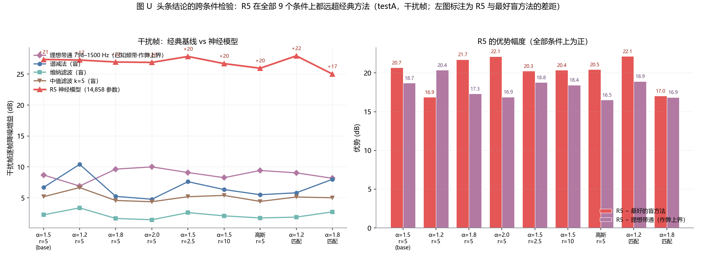
* 理想带通 798–1500 Hz 是已知信号频带的作弊上界，不是可用的盲方法； 列出它是为了给"模型到底比一个完美的固定滤波器强多少"一个参照。
把 Δ = R5 − R4（同种子内逐样本配对，再跨种子汇总）在 7 个条件上分别算出来：
| 条件 | 干净帧 Δ (dB) | 干扰帧 Δ (dB) | 干扰最差 Δ (dB) |
|---|---|---|---|
| α=1.2 / rate=5 | +0.157 ± 0.243 p≤8.3e-01 ns | +0.202 ± 0.435 p≤1.3e-01 ns | -0.049 ± 0.351 p≤6.3e-02 ns |
| α=1.5 / rate=5 训练条件 | +0.127 ± 0.185 p≤4.4e-01 ns | +0.790 ± 0.319 p≤1.7e-06 *** | +0.025 ± 0.316 p≤1.7e-01 ns |
| α=1.8 / rate=5 | +0.087 ± 0.174 p≤3.6e-01 ns | +1.163 ± 0.312 p≤9.5e-15 *** | +0.021 ± 0.334 p≤2.8e-01 ns |
| α=2.0 / rate=5 | +0.139 ± 0.236 p≤5.6e-01 ns | +1.297 ± 0.277 p≤8.0e-18 *** | +0.007 ± 0.325 p≤1.0e+00 ns |
| α=1.5 / rate=2.5 | +0.084 ± 0.162 p≤5.9e-03 ** | +0.975 ± 0.271 p≤1.0e-09 *** | +0.384 ± 0.213 p≤4.3e-01 ns |
| α=1.5 / rate=10 | +0.128 ± 0.220 p≤9.9e-01 ns | +0.548 ± 0.370 p≤2.7e-01 ns | -0.087 ± 0.345 p≤2.3e-02 * |
| 独立高斯数据 / rate=5 | +0.037 ± 0.224 p≤1.7e-01 ns | +1.738 ± 0.519 p≤2.0e-27 *** | +0.368 ± 0.338 p≤1.3e-01 ns |
| Δ 的 ± 为种子间标准差；p 为对【逐种子效应量】做单样本 t 检验的 p（自由度 = 种子数 − 1）。 这个口径比种子内逐样本配对（n≈1080）更保守 —— 后者只消除样本抽样， 前者才反映训练随机性；两者结论一致时才能说效应稳健。 | |||
再把这套时域通路 + 脉冲注入的整体架构优势拆出来 —— Δ = R5 − R3（相对纯频域掩码）：
| 条件 | 干净帧 Δ (dB) | 干扰帧 Δ (dB) | 跨种子 p |
|---|---|---|---|
| α=1.2 / rate=5 | +5.04 ± 0.25 | +4.03 ± 0.47 | 4.5e-05 |
| α=1.5 / rate=5 训练条件 | +3.30 ± 0.21 | +3.07 ± 0.24 | 8.3e-06 |
| α=1.8 / rate=5 | +1.01 ± 0.15 | +1.81 ± 0.20 | 3.8e-05 |
| α=2.0 / rate=5 | +0.18 ± 0.21 | +1.39 ± 0.26 | 2.6e-04 |
| α=1.5 / rate=2.5 | +3.16 ± 0.24 | +2.87 ± 0.18 | 3.8e-06 |
| α=1.5 / rate=10 | +3.45 ± 0.16 | +3.02 ± 0.21 | 5.1e-06 |
| 独立高斯数据 / rate=5 | -0.50 ± 0.11 | +1.07 ± 0.28 | 1.0e-03 |
| 纯频域掩码（R3）的干扰帧增益在 α=1.2 时只有 23.26 dB、α=2.0 时 25.51 dB， 而 R5 在两端都稳定在 27.29 / 26.90 dB 附近 | |||
下表是各模型在异常条件下相对 base 的干扰帧增益变化，负值表示退化。 因为各条件共享同一批 (chirp, 信道, SNR, 重复)，这里是逐样本配对的结果， 比独立样本灵敏得多。
| 模型 | α=1.2 rate=5 | α=1.5 rate=5 | α=1.8 rate=5 | α=2.0 rate=5 | α=1.5 rate=2.5 | α=1.5 rate=10 | 高斯 rate=5 |
|---|---|---|---|---|---|---|---|
| R5 R4 + 脉冲感知分支 | -0.09 ± 0.22 | +0.00 ± 0.00 | -0.41 ± 0.07 | -0.48 ± 0.12 | +0.55 ± 0.05 | -0.73 ± 0.11 | -1.42 ± 0.05 |
| R4 时域残差+频域精修 | +0.50 ± 0.29 | +0.00 ± 0.00 | -0.78 ± 0.07 | -0.98 ± 0.09 | +0.32 ± 0.11 | -0.45 ± 0.13 | -2.37 ± 0.22 |
| R3 纯频域掩码 | -1.05 ± 0.13 | +0.00 ± 0.00 | +0.85 ± 0.07 | +1.20 ± 0.12 | +0.75 ± 0.05 | -0.66 ± 0.11 | +0.58 ± 0.09 |
| 纯时域 PAM-Net | -1.02 ± 0.26 | +0.00 ± 0.00 | — | — | — | -0.01 ± 0.09 | — |
| 纯时域（无脉冲分支） | -1.09 ± 0.16 | +0.00 ± 0.00 | — | — | — | +0.01 ± 0.17 | — |
| ± 为种子间标准差；负值 = 该条件下干扰帧增益低于 base。注意 α 轴各条件的干扰强度本身就不同 （见表 8.1），所以这里的"退化"同时包含难度变化 | |||||||
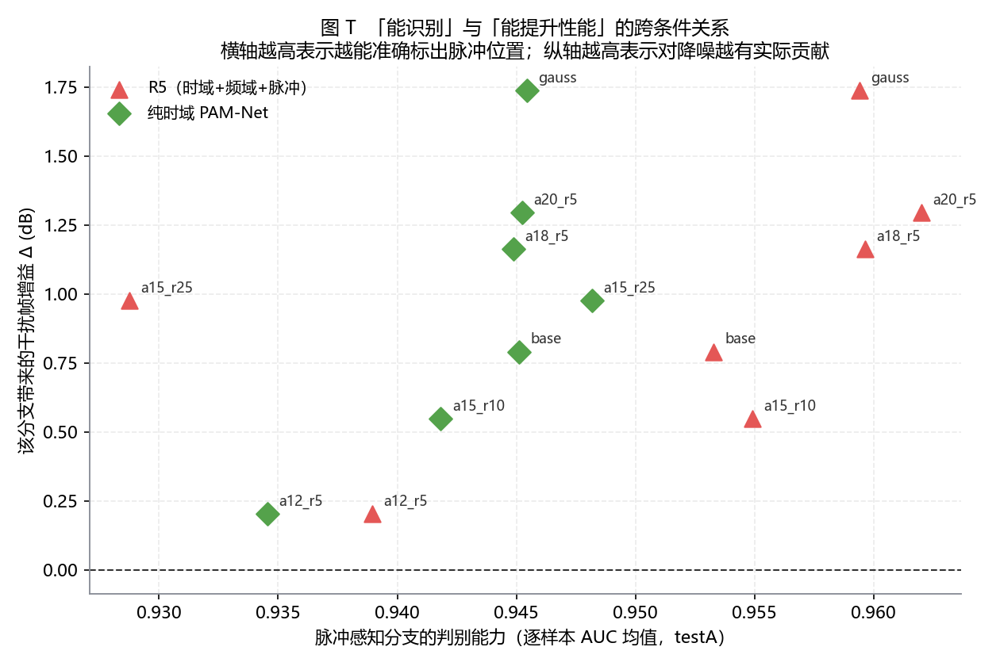
横轴是该分支把 pn 当作脉冲检测器时的逐样本 AUC（越高越能准确标出脉冲位置）， 纵轴是它带来的干扰帧增益。上一节在单工作点上得到的"能识别 ≠ 能提升性能" 在本节被推广到全部条件：AUC 在 7 个条件上稳定在 0.929~0.962 （变化不到 0.04），而性能收益却在 0.20~1.74 dB 之间起伏。 这进一步说明两者的解耦不是工作点的偶然现象，而是结构性的。
前面所有跨条件结果都是零样本的（模型只在 base 上训练过）。这能回答
"分布偏移下还稳不稳"，但回答不了"在 rate=10 这个条件下，方法本身是不是就不行了"。
本节在 a15_r10 上从头重训 R4 与 R5（各 3 个种子，与 base 前 3 个种子一致），
做三方对照。
| 配置 | R4 干扰帧 (dB) | R5 干扰帧 (dB) | Δ = R5 − R4 | 种子数 |
|---|---|---|---|---|
| base（训练条件，CPU） | 26.59 | 27.38 | +0.790 | 5 |
| a15_r10 零样本（CPU） | 26.16 | 26.71 | +0.548 | 5 |
| a15_r10 域内重训（GPU） | 26.86 | 27.18 | +0.322 | 3 |
| testA。base 与零样本为 CPU 训练，域内重训为 GPU 训练 —— 设备效应已单独核对，见下 | ||||
8.6 补上了 rate 轴，但 α 轴仍是零样本。这意味着 8.1b 的“尾形 vs 强度”分解
（α=1.2 端 尾形 65% / 强度 35%，α=1.8 端 尾形 +0.976 dB）
建立在“模型没见过该 α”的前提上——它可能把分布偏移误当成了尾形效应。
本节在 m_a12（α=1.2，等有效功率）与 m_a18（α=1.8，等有效功率）上
从头重训 R4/R5（各 3 个种子），做同样的三方对照。
| 条件 | R4 干扰帧 (dB) | R5 干扰帧 (dB) | Δ 零样本 | Δ 域内 | Δ 域内（设备校正后） | 相对 base |
|---|---|---|---|---|---|---|
| base α=1.5 | 26.59 | 27.38 | +0.790（5 种子） | — | 基准 | |
| α=1.2 零样本 | 27.55 | 27.96 | +0.410 | — | — | -0.380 |
| α=1.2 域内 | 27.62 | 28.08 | — | +0.464 | +0.555 | -0.235 |
| α=1.8 零样本 | 23.25 | 25.02 | +1.766 | — | — | +0.976 |
| α=1.8 域内 | 25.68 | 26.34 | — | +0.662 | +0.752 | -0.038 |
| testA。域内为 GPU 训练（3 种子），设备效应对 Δ = -0.091 dB，已校正 | ||||||
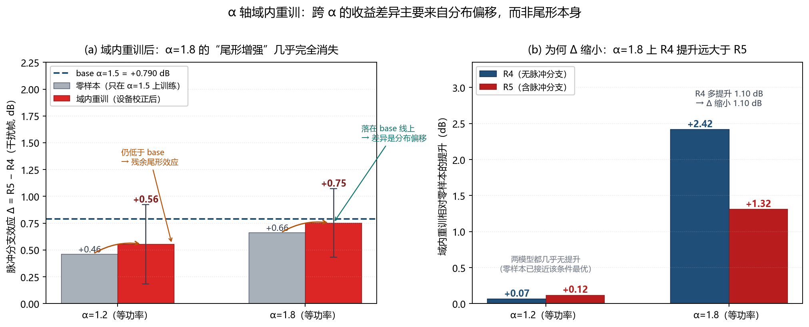
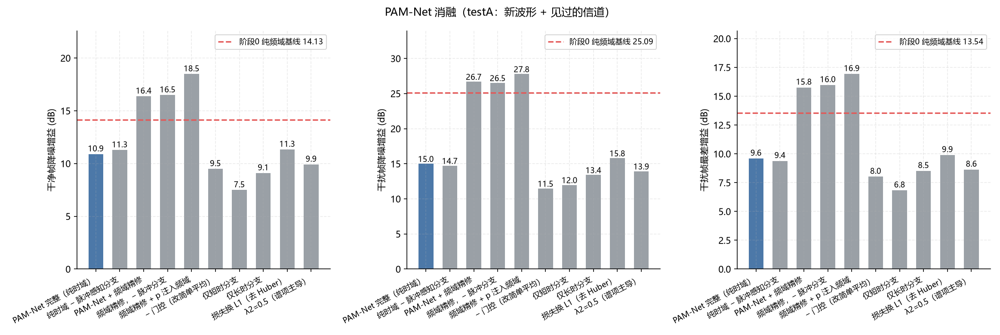
| 变体 | 参数 | 干净帧 (dB) | 干扰帧 (dB) | 干扰最差 (dB) | Δ干净帧 | Δ干扰帧 | Δ最差 |
|---|---|---|---|---|---|---|---|
| PAM-Net 完整（纯时域，BN）（参照） | 8,906 | +10.90 | +15.01 | +9.59 | -3.23 | -10.08 | -3.95 |
| 纯时域 − 脉冲感知分支（BN） | 8,457 | +11.28 | +14.72 | +9.38 | -2.85 | -10.37 | -4.16 |
| PAM-Net + 频域精修（BN） | 14,816 | +16.38 | +26.70 | +15.75 | +2.25 | +1.61 | +2.21 |
| 频域精修，− 脉冲分支（BN） | 14,367 | +16.49 | +26.52 | +15.96 | +2.36 | +1.43 | +2.43 |
| 频域精修 + p 注入频域（BN） | 14,858 | +18.49 | +27.79 | +16.93 | +4.35 | +2.70 | +3.39 |
| PAM-Net 纯时域（GN） | 8,906 | +11.24 | +17.83 | +10.17 | -2.89 | -7.26 | -3.37 |
| 纯时域 − 脉冲分支（GN） | 8,457 | +12.02 | +18.16 | +10.39 | -2.11 | -6.93 | -3.14 |
| 频域精修 + p 注入频域（GN） | 14,858 | +18.50 | +27.47 | +17.20 | +4.36 | +2.37 | +3.66 |
| 频域精修，− 脉冲分支（GN） | 14,367 | +18.15 | +26.20 | +16.83 | +4.01 | +1.11 | +3.29 |
| − 门控（改简单平均） | 7,730 | +9.50 | +11.48 | +8.01 | -4.63 | -13.62 | -5.52 |
| 仅短时分支 | 3,794 | +7.50 | +11.99 | +6.83 | -6.64 | -13.11 | -6.71 |
| 仅长时分支 | 4,922 | +9.11 | +13.41 | +8.51 | -5.02 | -11.69 | -5.02 |
| 损失换 L1（去 Huber） | 8,906 | +11.34 | +15.80 | +9.89 | -2.80 | -9.29 | -3.64 |
| λ2=0.5（谱项主导） | 8,906 | +9.92 | +13.94 | +8.63 | -4.21 | -11.16 | -4.90 |
| Δ 为相对【阶段0 纯频域基线】的差（正 = 更好） | |||||||
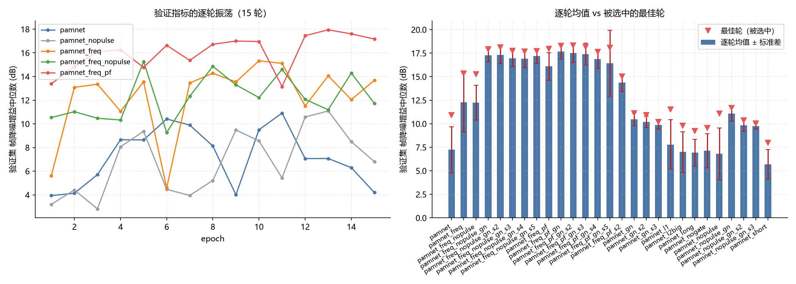
| run | 逐轮 val 帧增益标准差 (dB) | 最佳轮次 | 最佳−末5轮 (dB) |
|---|---|---|---|
| pamnet | 2.450 | 11 | 3.80 |
| pamnet_freq | 3.146 | 10 | 2.05 |
| pamnet_freq_nopulse | 1.857 | 5 | 2.48 |
| pamnet_freq_nopulse_gn | 0.705 | 15 | 0.06 |
| pamnet_freq_nopulse_gn_s2 | 0.916 | 15 | 0.06 |
| pamnet_freq_nopulse_gn_s3 | 0.881 | 15 | 0.08 |
| pamnet_freq_nopulse_gn_s4 | 0.966 | 14 | 0.06 |
| pamnet_freq_nopulse_gn_s5 | 0.752 | 15 | 0.02 |
| pamnet_freq_pf | 1.483 | 13 | 1.29 |
| pamnet_freq_pf_gn | 0.831 | 15 | 0.08 |
| pamnet_freq_pf_gn_s2 | 1.011 | 15 | 0.06 |
| pamnet_freq_pf_gn_s3 | 1.164 | 15 | 0.04 |
| pamnet_freq_pf_gn_s4 | 1.017 | 14 | 0.05 |
| pamnet_freq_pf_gn_s5 | 3.495 | 15 | 0.05 |
| pamnet_gn | 0.677 | 15 | 0.05 |
| pamnet_gn_s2 | 0.601 | 15 | 0.15 |
| pamnet_gn_s3 | 0.437 | 15 | 0.02 |
| pamnet_l1 | 2.638 | 6 | 4.08 |
| pamnet_l2big | 2.164 | 11 | 3.00 |
| pamnet_long | 1.435 | 4 | 2.53 |
| pamnet_nogate | 1.815 | 14 | 1.30 |
| pamnet_nopulse | 2.759 | 13 | 2.61 |
| pamnet_nopulse_gn | 0.779 | 14 | 0.03 |
| pamnet_nopulse_gn_s2 | 0.640 | 13 | 0.05 |
| pamnet_nopulse_gn_s3 | 0.307 | 15 | 0.03 |
| pamnet_short | 1.575 | 8 | 2.36 |
verify_pamnet.py 不复用训练脚本的任何实现：自己读 .mat、
自己 resample_poly(1,4)、自己实现 SNR / SI-SDR / 逐帧降噪增益，
再与训练脚本产出的逐样本 CSV 对比。唯一共用的是模型定义本身
（验证一个模型不可能绕开它的结构）。
结果：均值逐位吻合；逐样本最大差 2.4e−3 dB，来自 STFT/ISTFT 在 float32 下的 舍入放大。150 个样本无一变差（最差 +4.53 dB）。
# 1) 单元测试（8 项，必须全过）
python code/analysis/test_pamnet.py
# 2) 损失量级校准（确定 lambda2）
python code/analysis/calibrate_loss.py
# 3) 归一化诊断（解释为什么必须换 GroupNorm）
python code/analysis/diagnose_bn.py --ckpt D:/project/output_pamnet/model_pamnet.pth
# 4) 最终协议：GroupNorm + 多种子（关键 4 个配置；S 为空/s2/s3/s4/s5）
D=D:/project/dataset_pam/alphastable
python code/python/train_pamnet.py --tag pamnet_gn --data $D --epochs 15 --norm gn
python code/python/train_pamnet.py --tag pamnet_gn_s2 --data $D --epochs 15 --norm gn --seed 2
python code/python/train_pamnet.py --tag pamnet_nopulse_gn --data $D --epochs 15 --norm gn --pulse 0
python code/python/train_pamnet.py --tag pamnet_freq_pf_gn --data $D --epochs 15 --norm gn --freq-refine 2.0 --pulse-freq 1
python code/python/train_pamnet.py --tag pamnet_freq_nopulse_gn --data $D --epochs 15 --norm gn --freq-refine 2.0 --pulse 0
# （其余种子同理，只改 --seed 与 --tag 后缀）
# 5) 受控阶梯：纯频域模式（架构等价性必须先验证）
python code/analysis/test_pamnet_freqonly.py
FO="--short 0 --long 0 --pulse 0 --freq-refine 2.0"
python code/python/train_pamnet.py --tag fo_bn_l1 --data $D --epochs 15 --norm bn --loss l1 --lam-spec 0.5 --select val_loss $FO # 复现阶段0 协议（管线等价性检查）
python code/python/train_pamnet.py --tag fo_bn_huber --data $D --epochs 15 --norm bn --loss huber --lam-spec 0.05 $FO # 只换损失 + 模型选择准则
python code/python/train_pamnet.py --tag fo_gn --data $D --epochs 15 --norm gn --loss huber --lam-spec 0.05 $FO # 再换归一化（S 为空/s2..s5）
python code/analysis/analyze_ladder.py # 阶梯表 + 逐步增量 + 图 P
# 6) 波形机制：chirp 扫描集（含"固定干扰"的配对版）
# MATLAB:
# sp = struct('name',{'chirpscan'},'chirps',{1:20},'chans',{1:8},'n_noise',{2});
# dump_chirp_table('D:/project/chirp_table.csv');
# make_dataset_pam('alphastable','D:/project/ds_chirpscan',1.5,sp); % 原始
# make_dataset_pam('alphastable','D:/project/ds_scan_paired',1.5,sp,'paired'); % 配对
python code/analysis/analyze_chirp_band.py --scan D:/project/ds_chirpscan/chirpscan
python code/analysis/analyze_chirp_band.py --scan D:/project/ds_scan_paired/chirpscan --cache-tag _paired # 图 O + 方差分解 + 相关分析
# 7) 分析与出图
python code/analysis/analyze_seeds.py # 多种子聚合 + 跨种子检验
python code/analysis/analyze_stability.py # 逐轮振荡与选择偏差
python code/analysis/make_fig_seeds.py # 图 M / 图 N
python code/analysis/paired_test_pamnet.py # 样本级配对检验
python code/analysis/verify_pamnet.py --ckpt D:/project/output_pamnet/model_pamnet_freq_pf.pth \
--tag pamnet_freq_pf --freq-refine 2.0 --pulse-freq 1
python code/analysis/compare_baseline_pam.py
# 8) 适用边界（敏感性）：5 个条件的数据集（单因素轮换，共同随机数）
# MATLAB（一次生成全部条件；--conds 可只跑部分）:
# gen_sensitivity([1 2 3 4 5]) % a12_r5 / a18_r5 / a20_r5 / a15_r25 / a15_r10
# % 基线条件直接用 D:/project/dataset_pam/alphastable；高斯对照用 dataset_pam/gauss
# 9) 零样本跨条件评估（含逐样本逐种子结果）
python code/analysis/eval_sensitivity.py --prep # 预处理 + 噪声功率分解
python code/analysis/eval_sensitivity.py --verify # 口径校验：与存档 CSV 逐位比对
python code/analysis/eval_sensitivity.py --nshard 6 --shard 0 # 6 路并行，支持断点续跑
# 10) 统计分析与出图
python code/analysis/analyze_sensitivity.py --split testA # 表1~表5 + 汇总 JSON + 扁平 CSV
python code/analysis/analyze_sensitivity.py --split testC
python code/analysis/make_fig_sensitivity.py # 图 Q / R / S / T
python code/analysis/diagnose_pulse_sens.py --max 300 # 脉冲分支 AUC 跨条件
# 11) 域内重训（区分"分布偏移"与"方法本身优劣"；后台跑）
# 注意：必须用受管的后台机制启动（见下方 run_in_background），
# 裸 nohup & 的进程会被环境回收
bash code/analysis/run_sens_train.sh # a15_r10 上 R4/R5 × 3 种子
# 12) 等有效功率 SNR 的 α 重扫（把 α 与噪声强度解耦）
# MATLAB（先算 shift，见 analyze_matched.py 第 1 步的输出）:
# gen_sensitivity_matched([1 2]) % m_a12 (α=1.2, 名义 +13.07) / m_a18 (α=1.8, 名义 −10.00)
python code/analysis/eval_sensitivity.py --prep --conds m_a12 m_a18
python code/analysis/eval_sensitivity.py --conds m_a12 m_a18 --configs R3_freqonly R4_freqrefine_nopulse R5_freqrefine_pulse --nshard 3 --shard 0 # 3 路并行
python code/analysis/analyze_matched.py --split testA # 强度/尾形分解 + 留一法
python code/analysis/analyze_matched.py --split testC
本报告由 build_report_pamnet.py 自动生成。数字来自 figs_pamnet/ 下的
summary_pamnet.json / seed_agg.json / pulse_diag.json / baseline_pam.json /
paired_test.json / stability.json / ladder.json / chirp_band.json / chirp_band_paired.json，
以及 sens_out/ 下的 sens_summary_testA.json / sens_summary_testC.json /
pulse_diag_sens.json（适用边界实验）。